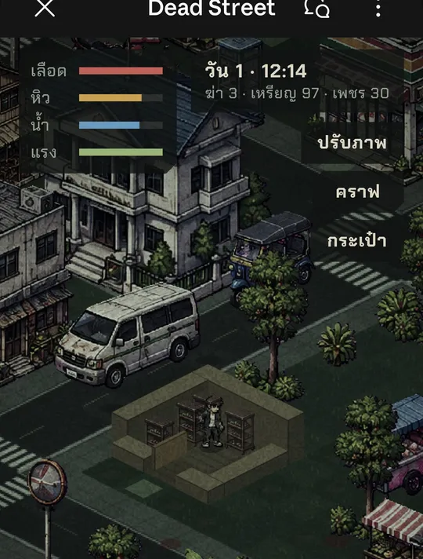
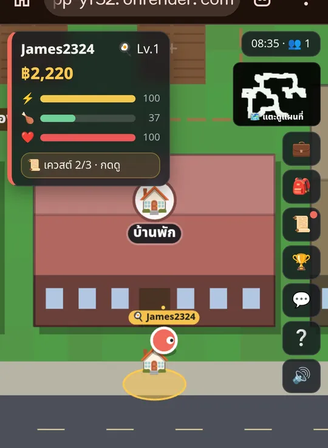
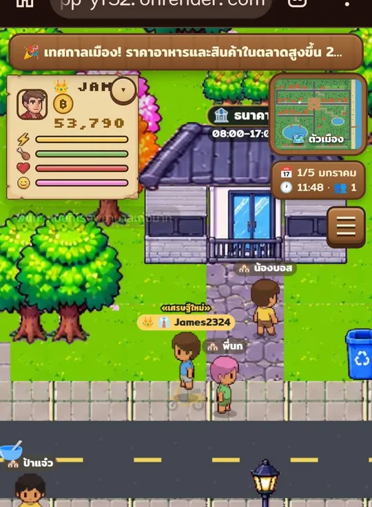
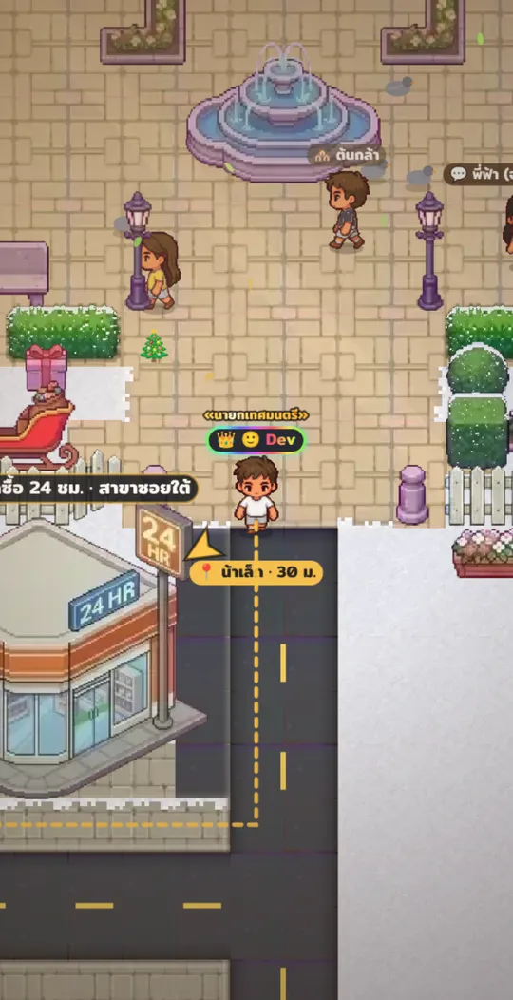
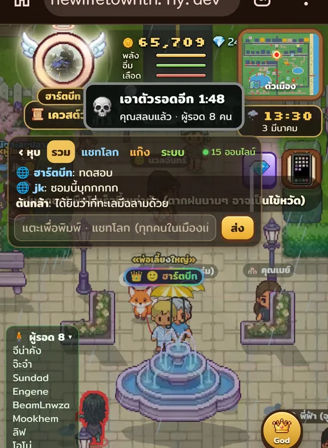
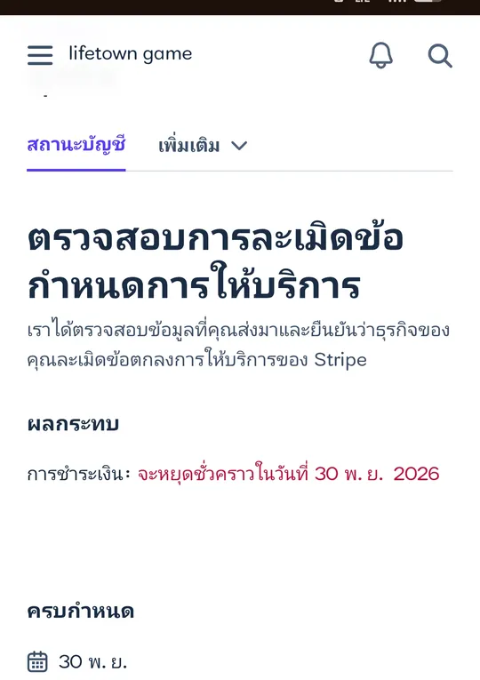
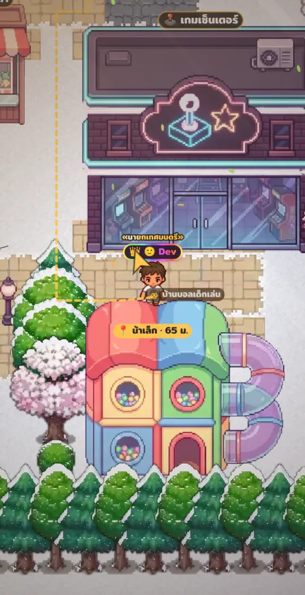
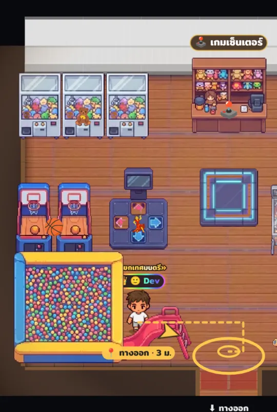

ผมชอบเกมเอาชีวิตรอดจากซอมบี้อย่าง Project Zomboid มาก แต่ชีวิตจริงงานเยอะ แทบไม่มีเวลาได้นั่งหน้าคอมเลย
เลยคิดว่า… งั้นทำเกมเล่นเองบนมือถือดีไหม?

Dead Street · เกมแรกเริ่มลงมือทำเกมซอมบี้ชื่อ Dead Street แต่ ยิ่งทำยิ่งเละ เพราะผมไม่มีความรู้เรื่องโค้ดเลยสักนิด
นั่งเรียนจากยูทูปกับติ๊กต็อกทีละนิด แล้วไอเดียก็เปลี่ยนเป็น หมู่บ้านที่มีเศรษฐกิจของตัวเอง ทุกอาชีพพึ่งพากันเป็นวงกลม

เวอร์ชันแรกสุด · 👥 1 คนเมืองแรกเป็นแค่กล่องสี่เหลี่ยม ดูมุมขวาบนสิครับ 👥 1 คนที่ออนไลน์อยู่… คือผมเอง
ใจคิดจะยกเลิก แล้วกลับไปทำแบบออฟไลน์เล่นคนเดียว

ยุคพิกเซลแรกอยู่ๆ ก็มีคนเข้ามาเล่น! แต่เกมถูกออกแบบให้ หมุนเงินกันเองในหมู่บ้าน พอคนจริงเข้ามา เศรษฐกิจรับไม่ไหว ต้องยุบทิ้ง แล้วเปลี่ยนเป็นทำเควสหาเงินแทน

ลานจัตุรัสกลางเมืองคนสมัครเข้ามา 600 กว่าบัญชี เพื่อดูว่าเรากำลังทำอะไรอยู่ มันกลายเป็นไฟ อยากสร้างคอมมูนิตี้ใหญ่ ที่ผู้คนมารวมกันที่นี่ ไอเดียกองเป็นภูเขารออัปเดต
ตัวช่วยเขียนโค้ดที่ใช้อยู่ใช้ได้ตามโควต้า (Token) พอหมด ก็ แก้บั๊กให้ผู้เล่นไม่ได้เลย ได้แต่นั่งมองผู้คนค่อยๆ จากไป
ปัญหาที่ไม่คิดว่าจะเกิด: เซิร์ฟเวอร์ฟรีที่ใช้อยู่ เต็มโควต้า เกมรันต่อไม่ได้ คนลดลงจนผมอยากจะทิ้งมันไปจริงๆ
ในวันที่คนลดลงจนผมอยากทิ้ง ยังมีข้อความ ไม่กี่ข้อความ แบบนี้ส่งมา… แค่นี้ก็พอให้ลุกขึ้นใหม่

อีเวนต์ซอมบี้ · 15 คนออนไลน์ผมตัดสินใจครั้งใหญ่ ทุ่มเงินก้อนเปิดเซิร์ฟเวอร์จริงจัง เพื่อผู้เล่นกลุ่มเล็กๆ กลุ่มนี้ แล้วนั่งกู้ข้อมูลทุกคนกลับมา
นั่งกู้ข้อมูลจนไม่ได้นอน ตีห้าก็ต้องออกไปทำงานต่อ

ผู้ให้บริการรับเงินระงับบัญชีมีผู้เล่นเติมเงินเข้ามาช่วย แต่ตัวกลางรับชำระเงินระงับบัญชี ผลคือ ผมไม่ได้เงินสักบาท ตอนนี้ก็ยังทำฟรีอยู่


วันนี้เมืองมีอาชีพ บ้าน สัตว์เลี้ยง สวนสนุก เกมเซ็นเตอร์ ตู้คีบตุ๊กตา อีเวนต์ซอมบี้ เทศกาล และยัง อัปเดตแทบทุกวัน จากไอเดียของผู้เล่น
ไม่ว่าอะไรจะเกิดขึ้น ผมแค่อยากให้คนที่ผ่านมา ได้สัมผัสเกมนี้สักครั้ง
เพราะผมตั้งใจกับมันมากจริงๆ
มาเติบโตไปพร้อมกับอัปเดตของเรา
เห็นการพัฒนาไปด้วยกัน ✅